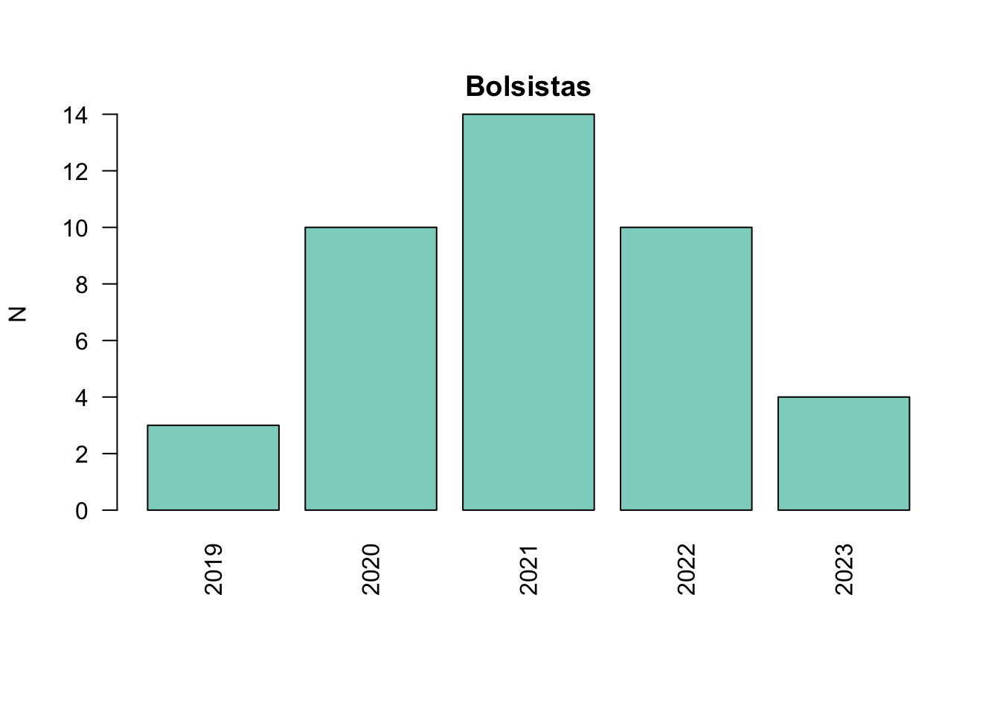

Impactos
Impacto educacional
Formação discente
Bolsistas titulados
Cotas de bolsas
Tabela
1 Dados de financiamento extraídos a partir dos financiadores dos trabalhos de conclusão de curso. Bolsistas ativos não estão incluídos.
Fontes: Plataforma Sucupira
Gráfico

1 Dados de financiamento extraídos a partir dos financiadores dos trabalhos de conclusão de curso. Bolsistas ativos não estão incluídos.
Fontes: Plataforma Sucupira
Produção acadêmica
Impacto científico
Impacto sociocultural
Ações durante a pandemia
Artigos completos
Artigos resumos
Preprints
Livros
Capítulos
Trabalhos em anais de eventos
Prêmios
|
|
|
|
|

Observatório de Arthur de Sa Ferreira está licenciado com uma Licença Creative Commons - Atribuição-NãoComercial 4.0 Internacional.
Copyright © 2021 Arthur de Sá Ferreira, DSc. Todos os direitos reservados. Última atualização em